장비 솔루션
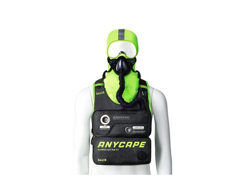
호흡보호구
비상호흡기 및 공급 시스템
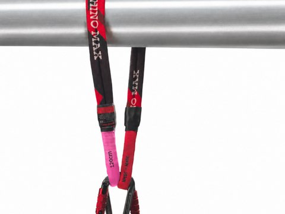
특수 로프
고강도 전술 로프
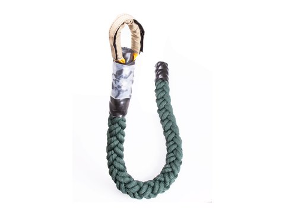
패스트로프
KAYA ROPES · Marlow 헬기 강하용
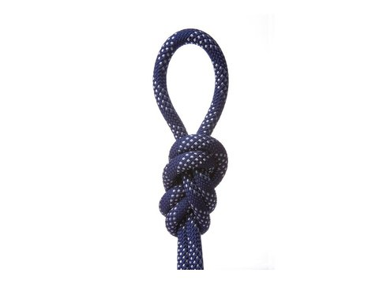
정적로프
구조·하강용 스태틱 로프

구조로프/슬링
XMONSTER · EDELRID 구조로프 · 앵커 슬링
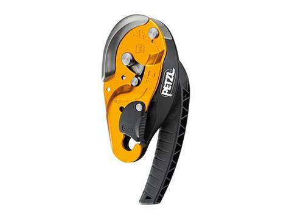
로프 구조장비
PETZL 하강기·등강기·도르래
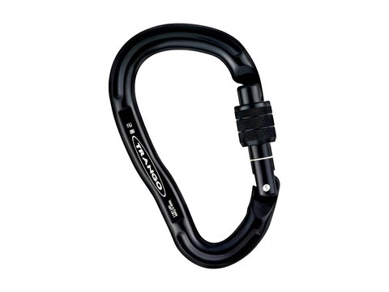
안전고리·하강장비
카라비너, 하강기, 등강기
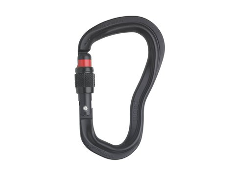
전술 랜야드·카라비너
Fusion Tactical 랜야드 · AUSTRIALPIN PIRUM · RIG-IT
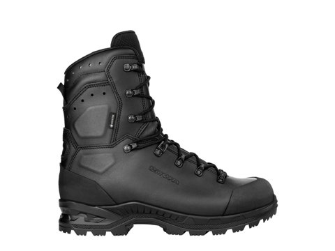
전술화·전술부츠
LOWA Z-8N · COMBAT MK2 · ZEPHYR MK2 HI W
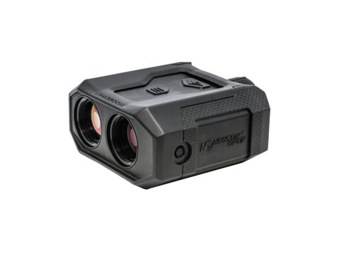
레이저 사거리측정기
NEWCON OPTIK LRM 3500M-35BT
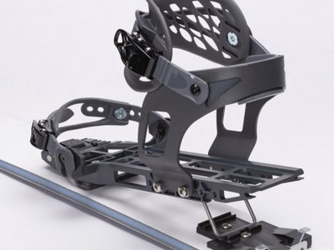
전술 훈련용 겨울장비
SERKET Scout 스키 · Patrol 바인딩
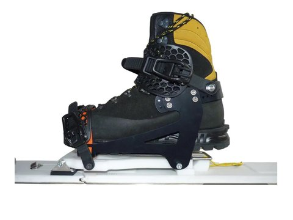
산악스키·바인딩
산악스키, 투어링 바인딩 및 부속
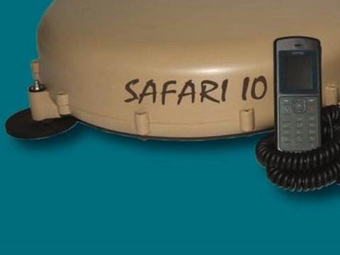
위성 통신
Wideye SAFARI™ 차량용 BGAN 단말
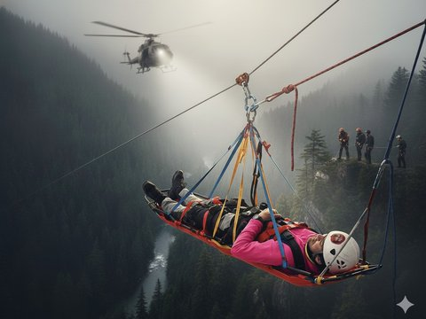
응급구조
구조 장비 솔루션
챗봇 상담
견적·납품·제품 문의 접수